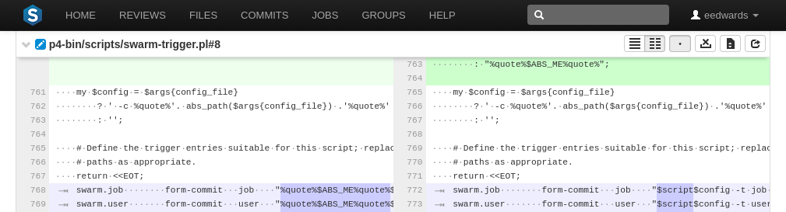
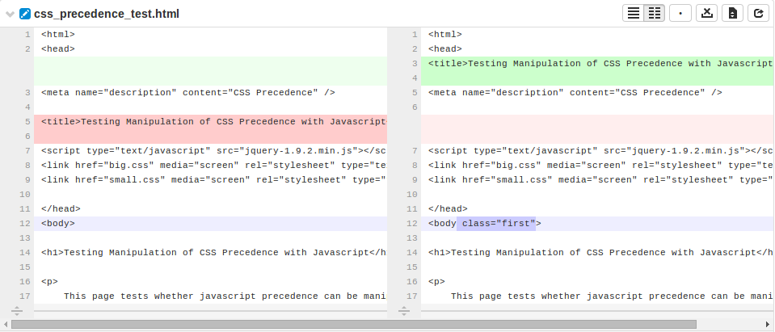
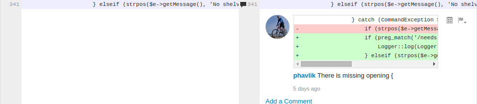
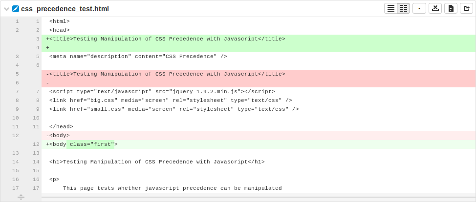
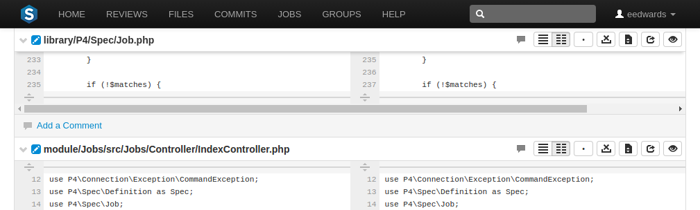

Diffs
When you view a changelist or code review, the associated files are presented as diffs, short for differences, showing you how they have changed.
The first row of buttons above the files allow you to (left to right):
-
Toggle the display of comments
-
Show all diffs as inline
-
Show all diffs as side-by-side
-
Collapse all files
-
Expand all files
Each file is presented with an icon indicating whether the file was:
-
Added/branched/imported
-
Edited/integrated
-
Deleted
The file's presentation can be controlled with (left to right):
-
button, which highlights line additions, modifications, and removals in a single pane.
-
button, which highlights additions, modifications, and removals in two panes, with the older version of the file on the left, and the newer version on the right.
-
 button, which makes whitespace characters more visible; spaces show up as dots, and tabs show up as arrows that point to a bar.
-
button, which toggles the highlighting of whitespace changes in a file, making it easier to identify non-formatting changes.
-
button toggles between displaying only the portions of the file that have changed and the full file (edited and integrated files only).
-
button, displayed only for edited or integrated files, opens a new browser tab/window display the full file (where possible), provide access to its history, and a button to download the file.
-
button, displayed only for code reviews, helps you (and others) keep track of which files have been reviewed. This is particularly useful when a code review consists of many files.
When clicked, the button's colors invert and the associated file is visually muted, to make it easy to distinguish read files from unread files:

If a file has been marked as read, click the button a second time to reset the status to unread.

If the file has comments associated, its entry shows a comments exist icon.
Viewing a diff
When you view a diff, the changes are highlighted:

-
Red indicates lines that have been removed
-
Blue indicates lines that have been modified
-
Green indicates lines that have been added
The diff presentation displays a concise view of where changes are made within a file, showing the changed lines and only a few lines before and after each revision. Sometimes, this concise view is insufficient to understand the context of the change. The displays the entire file, but this can be too much detail.
When there are more lines in a file, either above or below the currently displayed diff, a row appears.
Clicking this row attempts to display 10 additional lines adjacent to the row (which may appear between two modifications), allowing up to 20 lines of additional context to be displayed. The row disappears when no additional content is available.
Comments may be presented within the body of a file and appear immediately below the line the commenter targeted for comment. See Comments for more details.

Note
The comment(s) exist here icon appears in the line number column whenever comments exist. This is useful when the comment display is toggled off.
When viewing a diff in-line, the line numbers for the old version are first, and the line numbers for the new version are second, followed by the file content. Some users find this view easier to use when locating an area that has changed, but then switch to side-by-side view to help them understand the change better. Swarm maintains the scroll position; you do not lose your place in the file after toggling the diff view.

Note
Press n on your keyboard to scroll to the next changed area within a file. Press p to scroll to the previous change.
When a diff contains multiple files, the changes may be taller than your browser window. Swarm keeps the per-file toolbar in view for each file as you scroll, so that you can continue to identify the file at the top of the screen and control its presentation.
